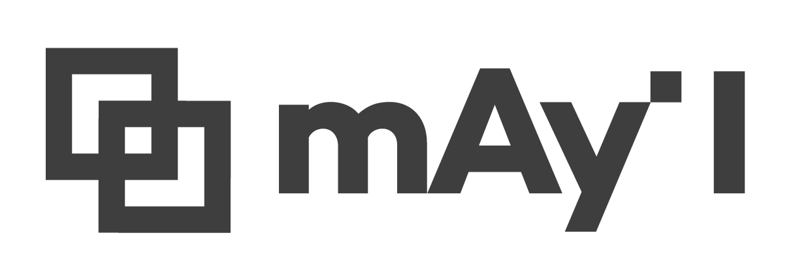
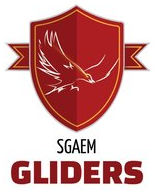

(주) 메이아이 | mAy-I inc.
CTO (2018.12. -)
A Software Engineer in South Korea.
최신 기술을 빠르게 적용하여 결과를 도출하는 엔지니어의 역할을 좋아합니다.
다양한 영역에 대한 기초적인 배경 지식과 수학적 사고력을 중요하게 생각합니다. 새로운 영역의 지식을 빠르게 학습해서 실제로 사용해보는 일을 좋아합니다. 빠르게 학습하는 팀의 문화를 팀원들과 함께 발전시켜 나가고 있습니다.

(주) 메이아이 | mAy-I inc.
CTO (2018.12. -)
Overwatch Scrim Manager
2025.12. -
오버워치 스크림 팀 운영을 위한 웹 서비스. 팀원·일정·기록을 한 곳에서 관리합니다.
Overwatch Leaderboard Stats Pipeline
2023.10. - 2026.01.
AWS / Computer Vision
오버워치 경쟁전 리더보드에 노출되는 영웅 성능 지표 수집을 자동화한 워크로드. AWS에서 오버워치 클라이언트를 실행해 리더보드 이미지를 캡처하고, Computer Vision 로직으로 통계 지표로 변환했습니다.
Lumiere
2017.11. - 2020.01.
Python3 / Flask / Serverless / AWS Lambda + S3
Lumiere는 정시모집에서의 정보 격차를 해소하고자 만들어진 서비스입니다.
비 서울권에서는 정시모집 관련 정보에 접근하기가 어렵다고 느껴왔고, 실제로도 많은 친구들이 표준점수 합을 기준으로 작성된 종이 배치표를 보고 지원 여부를 결정하던 것을 보고 안타까움을 느꼈습니다. 이 문제를 조금이나마 해결하기 위해 전국의 모든 수험생들이 대학별 유불리와 대략적인 합격 가능성, 지원 시 필요한 여러 기초 개념에 보다 쉽게 접근할 수 있도록 인터넷에 공개된 정보에 기반하여 대학별 환산점수를 기반으로 작성된 합격 예측과 시기별로 필요한 각종 정보글의 링크를 제공했습니다.
IF2018 Business Care Generator in VIRUS NEWTORK
2018.09.
Python3 / Flask
Naver Cafe User Blocker
2018.07.
Chrome Extension / JavaScript / jQuery
한국대학생멘토연합
2018.02. - 2019.12.
15기-18기 서부지부 운영진
고등학생 대상의 진로 멘토링에 대학생 멘토로 20회 이상 참여했습니다.
대학수학능력시험 관련 콘텐츠에도 관심을 가지고 여러 방면으로 참여했습니다.
서강대학교 오버워치 대표팀
2021.11. -

SGAEM Gliders 서강대학교 오버워치 대표팀
2018. - 2019.